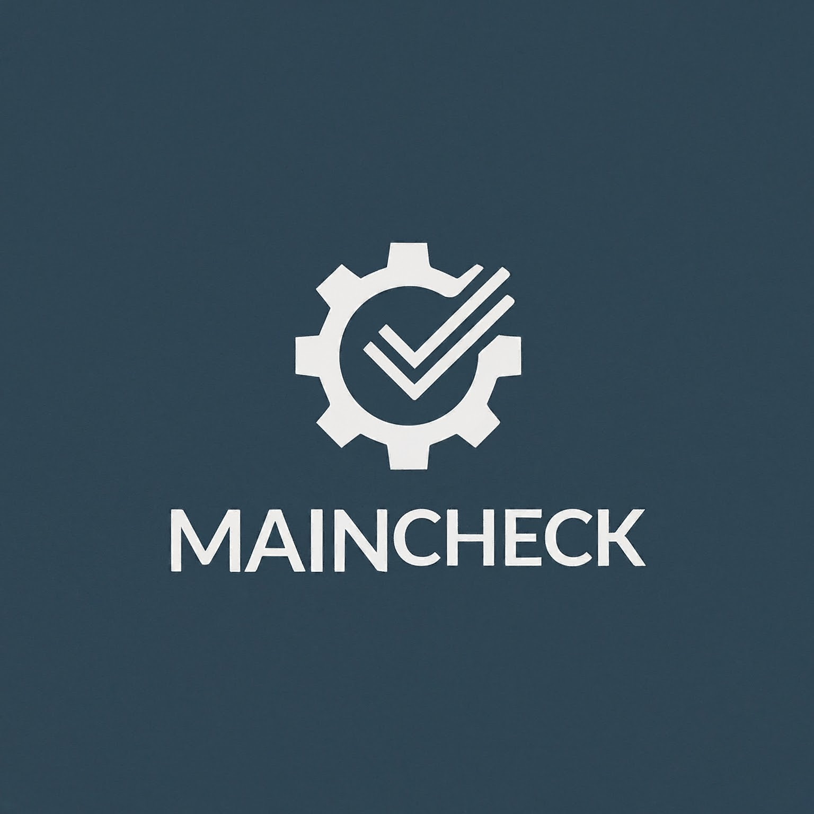

Bem-Vindo ao Main Check
Sua Solução, Consertos e Reparos.
O "MainChek" tem como objetivo simplificar e agilizar o processo de reparo e manutenção eletrônica para técnicos, oferecendo uma variedade de recursos abrangentes. Além disso, visa garantir a qualidade dos reparos realizados, reduzindo custos de possiveis erros no reparo e promovendo a colaboração entre os profissionais. o aplicativo visa não apenas aumentar a eficiência e a satisfação do cliente, mas também promover a excelência e a inovação dentro da comunidade de técnicos de manutenção eletrônica.
